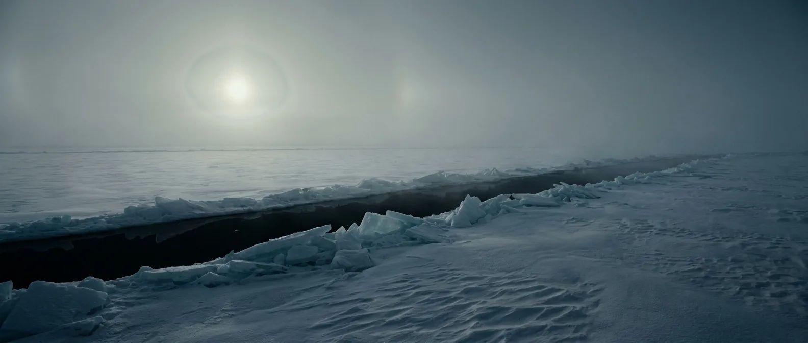
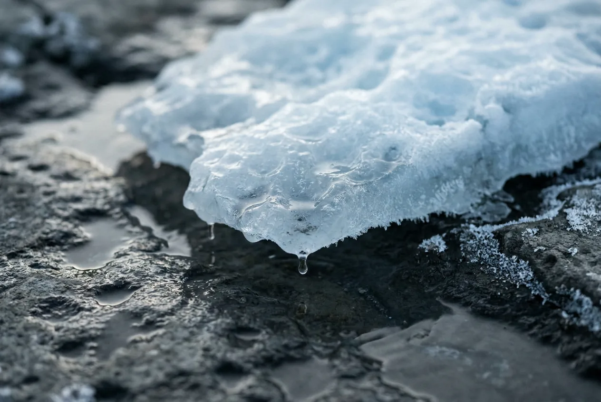

The longest era on this list, and the one where oxygen appears without helping. It rises fast at the start, stalls near one percent for a billion years, then rises again. In between, the planet freezes from the poles to the equator, twice.
A one-percent atmosphere is not a small step toward breathable. It is roughly equivalent to standing at 20 kilometres altitude, above the point where blood boils at body temperature. Arrive during a Snowball and hypothermia will be racing the asphyxiation.

Scale 0–40%. The Great Oxidation Event at ~2.4 Ga is the single biggest change in Earth's chemistry, and it still leaves you eight times short of breathable.
Scale −20 to 250 °C, so this sits off the bottom. Between glaciations the climate is unremarkable; the era's problem is that it does not stay that way.
Huronian (~2.4–2.1 Ga), Sturtian (717–660 Ma) and Marinoan (650–635 Ma). The Sturtian lasted roughly 57 million years with ice reaching the tropics.
Scale 0–24 h. Not an estimate: this one is read directly from cyclic sediment layers in the Xiamaling Formation, which record the Moon's orbital rhythm.
Scale 0–400,000 km. From the same sediment record. About 11% closer than today, so it looks slightly larger and pulls noticeably stronger tides.
Eukaryotes appear around 1.6 Ga and then do almost nothing for a billion years. That stretch is known informally as the Boring Billion, and low oxygen is the leading suspect.
Your body has no sensor for oxygen concentration. It measures carbon dioxide instead. In a low-O₂, low-CO₂ atmosphere you feel no urgency at all, right up until you stop being able to think.
The pattern is well documented from aviation hypoxia: fine motor control and decision-making degrade before you notice anything is wrong. Pilots in these conditions report feeling excellent while failing simple tasks.
Longer than the two dead eras before it, because there is at least some oxygen to extract. Not enough to matter.
During a Snowball, subtract most of that. At −50 °C in the clothes you arrived in, cold incapacitates you on a similar timescale to the hypoxia, and the two do not queue politely.
Only with air. The rest of the era is more welcoming than the two before it.

Present and useless. One percent of an atmosphere is not one percent of a solution.
Oceans, and after the Snowballs, meltwater everywhere. Between glaciations this is a normal blue planet.
Algal mats and single-celled eukaryotes. Nothing you could catch, chew, or get calories from.
Still impossible. Sustained combustion needs roughly 16% oxygen, the same threshold you need.
Real continents now, with sedimentary rock, caves and clay. The first era where the ground is worth anything.
Blue. Once the haze clears with the oxygen rise, this is the first era that looks like Earth.